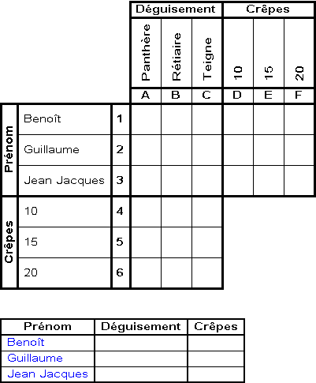
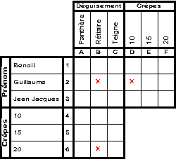
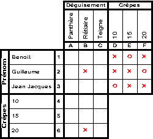
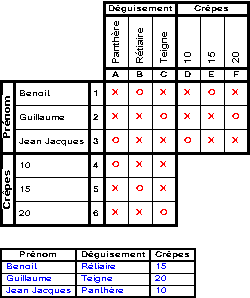

Petit exemple illustré :
Mardi gras à la Recherche
Introduction
C’est Mardi gras ! Les trois boute-en-train de la Recherche ont choisi de se déguiser et d’apporter des crêpes.
Pour chacun d’eux, retrouvez le déguisement et le nombre de crêpes apportées.
Enoncé
Grille et tableau de la solution

A la lecture du premier indice, il vient naturellement que le rétiaire n’est pas venu avec 20 crêpes, puisque c’est le maximum, et que Guillaume en a apporté plus. De façon symétrique, Guillaume n’est pas venu avec 10 crêpes. Ne pas oublier non plus que si Guillaume n’a pas le même nombre de crêpes que le rétiaire, alors forcément Guillaume n’était pas déguisé en rétiaire. Reportons ces déductions dans la grille. On signifie que la relation Rétiaire/20 crêpes est négative en plaçant
une croix X dans la case correspondante, de coordonnées B6. Les deux autres clauses mènent à placer une croix respectivement en D2 et B2.
Le second indice est beaucoup plus simple, puisqu’il se compose d’une clause explicite. Nous établissons une relation positive sur Benoît/15 crêpes. Cette information est reportée dans la grille en plaçant
un rond O en E1. Nous avons extrait toutes les déductions possibles de cet indice. En revanche, des déductions implicites sont encore à déduire au sein de la grille. En effet, si Benoît a 15 crêpes, et en appliquant le théorème de l’enfonçage de portes ouvertes, alors il vient qu’il n’en apporta ni 10, ni 20. Plaçons donc des croix respectivement en D1 et F1. De la même manière, si 15 crêpes ont été apportées par Benoît, alors elles n’ont été cuisinées ni par Guillaume, ni par Jean-Jacques, d’après le théorème cité précédemment. Nous placerons donc gentiment des croix en E2 et E3. Du coup et par application du théorème des chaises musicales, il ne reste plus qu’une possibilité pour Guillaume : c’est 20 crêpes et donc un rond en F2. De même, il reste 10 crêpes pour Jean-Jacques, soit un rond en D3.
Le troisième indice est aussi très simple, mais sa déduction explicite (la panthère vint avec 10 crêpes), qui nous fait placer un rond en A4, entraîne une avalanche de déductions implicites au sein de la grille, jusqu’à la solution! Tout d’abord, on placera des croix en A/5,6 et B,C/4 par application du théorème de l’enfonçage de portes ouvertes. Le théorème des chaises musicales conduit à placer un rond en B5 et, du coup, en C6. Par application du théorème des amis de mes amis sont mes amis, si la panthère avait 10 crêpes, et que Jean-Jacques apporta 10 crêpes, alors Jean-Jacques était déguisé en panthère, et on place un rond en A3. Appliquons le théorème de l’enfonçage de portes ouvertes, suivi du théorème des chaises musicales : la grille est complétée !

Retenez bien les trois théorèmes :
Note : un théorème pourra vous servir dans le jeu concours. Il s’agit du théorème des ennemis de mes amis sont mes ennemis qui dit que « si (A, B) vrai et (B, C) faux alors (A, C) faux ». Illustrons ceci sur l’exemple précédent : si Guillaume est une teigne et que la teigne n’a pas apporté 15 crêpes, alors Guillaume n’a pas apporté 15 crêpes.